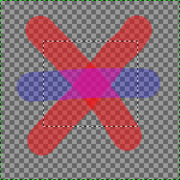
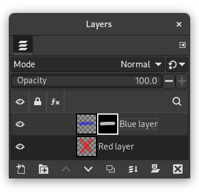
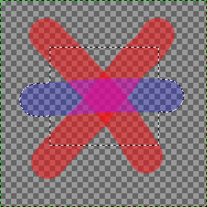

|

|
 |
| 7.31. Masks to Selection |

|
7.33. Subtract Masks from Selection |
The command converts the layer masks of the selected layers into a selection, which is added to the selection that is already active in the image.
White areas of the layer mask are selected, black areas are not selected, and gray areas are converted into feathered selections. The layer mask itself is not modified by this command.
Figura 16.97. Illustration of Add Masks to Selection

The original image with a selection.

The Layers Dialog with a layer mask created via Add Layer Masks… with the “Layer's alpha channel” option enabled.

The result after applying “Add Masks to Selection”: the selection of the non-transparent pixels of the selected layer is added to the initial selection.